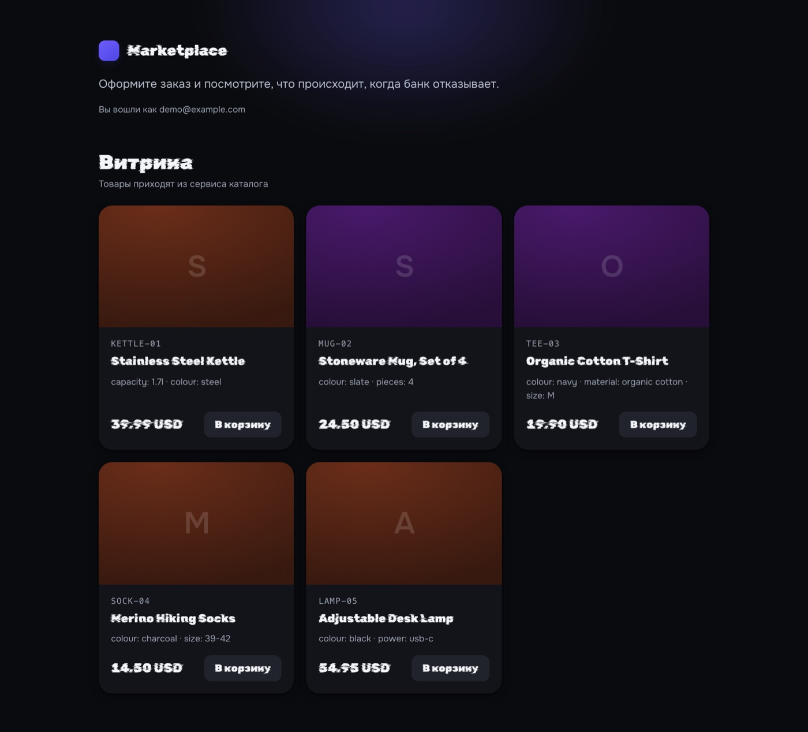
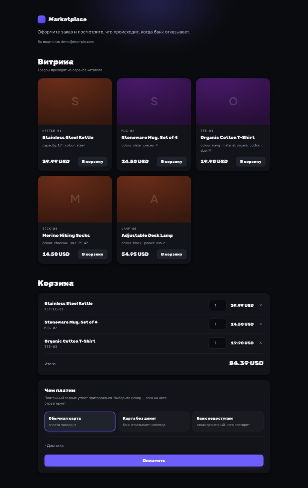
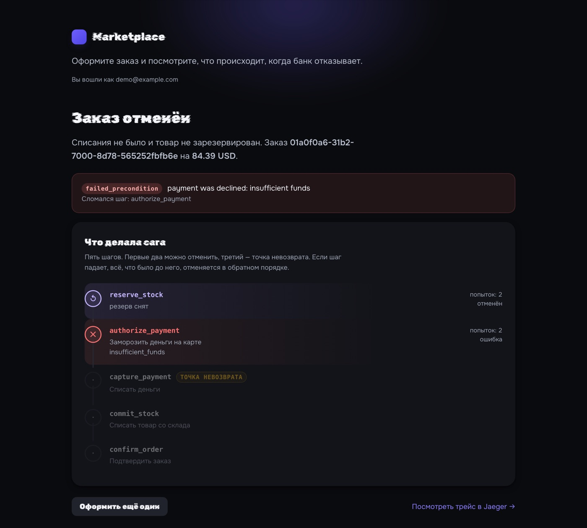

Что это
Учебный, но доведённый до конца бэкенд интернет-магазина. Не «сервисы ради сервисов»: каждое разделение здесь закрывает конкретную проблему, и в проекте есть шесть записей о решениях (ADR), где написано, почему выбрано именно так и что рассматривалось вместо.
Главная задача, вокруг которой собран весь проект — оформление заказа. Это единственное место, где система обязана быть согласованной, хотя данные лежат в четырёх разных базах, а операции выполняют четыре разных сервиса. Оплата, резерв товара и создание заказа должны либо случиться все вместе, либо не случиться вовсе.
Именно поэтому витрина — не украшение, а инструмент проверки: она рисует шаги саги и их статусы, так что результат виден глазами.
Архитектура
| Сервис | За что отвечает |
|---|---|
gateway | Единственная точка входа: REST наружу, gRPC внутрь. Отдаёт и витрину. |
auth | Регистрация, вход, JWT, refresh-токены. |
catalog | Товары, категории, поиск, пагинация. |
inventory | Остатки и резервы с TTL; фоновый воркер снимает просроченные. |
order | Оркестратор саги оформления заказа. |
payment | Платёжный шлюз-симулятор: одобряет, отказывает, «зависает» по выбору. |
notification | Слушает события Kafka и «отправляет» уведомления. |
Внутри каждого сервиса — порты и адаптеры: домен не знает ни про protobuf, ни про драйвер базы, ни про транспорт. У каждого сервиса своя база, и ни один не ходит в чужую.
Три решения, которые определяют проект
1. Сага с компенсациями, а не распределённая транзакция
Двухфазная фиксация потребовала бы координатора и блокировок на всё время оформления — при отказе банка это держит склад запертым. Вместо этого заказ выполняется как последовательность шагов, у каждого из которых есть обратный:
| Шаг | Откат при провале |
|---|---|
reserve_stock | release_stock — вернуть резерв на склад |
authorize_payment | void_payment — снять заморозку |
capture_payment | точка невозврата: деньги списаны, назад нельзя |
commit_stock | после точки невозврата только вперёд |
confirm_order | — |
Шаг, объявленный точкой невозврата, компенсации не имеет. До неё любой сбой означает полный откат; после — система обязана довести заказ до конца. Это не деталь реализации, а граница, которую в коде видно явно: у каждого шага есть флаг, разрешено ли его откатывать.
Отдельный случай — неизвестный исход. Если оплата не ответила вовремя, неизвестно, списались ли деньги. Проект исходит из того, что «неизвестно» — это отдельное состояние, а не ошибка: вслепую повторять списание нельзя, а вслепую откатывать тоже.
2. Transactional outbox вместо «сохранить и отправить»
Заказ меняется в базе и должен породить событие в Kafka. Если писать в базу и в Kafka по отдельности, один из двух шагов обязательно потеряется: процесс упадёт между ними, и система останется в противоречии.
Поэтому событие пишется в ту же транзакцию, что и изменение заказа, в таблицу outbox. Отдельный воркер вычитывает её и публикует. Ничего не теряется, потому что публикация больше не отдельный шаг.
Плата за это — доставка «как минимум один раз»: одно событие может прийти дважды. Значит, потребитель обязан быть идемпотентным, и в проекте он идемпотентен: повторное событие отсекается по event_id.
3. Идемпотентность на границе
Клиент, который не получил ответ на создание заказа, обязан иметь возможность повторить запрос. Ключ идемпотентности и сам заказ создаются в одной транзакции — если бы это были два шага, между ними осталось бы окно, в котором повтор создаёт второй заказ.
Наблюдаемость
Трассировка идёт сквозь весь путь: от HTTP-запроса через gRPC в другие сервисы и дальше через Kafka в уведомления. Ключевая тонкость — контекст трассировки сохраняется в момент создания события, а не в момент публикации: между ними стоит воркер outbox, и если сохранять трейс при отправке, он потеряет связь с исходным заказом.
Кроме этого — метрики Prometheus с готовыми дашбордами Grafana и алертами, и структурные логи с одним набором полей на все сервисы.
Что проверено, а не заявлено
Проект собран так, чтобы утверждения из этого текста можно было проверить командой, а не принимать на веру.
| Тесты | 410 тестовых функций. Все проходят с детектором гонок (-race). |
|---|---|
| Объём | 123 файла Go, около 43 500 строк, из них около 15 200 — тесты. |
| Нагрузка | k6 требует p95 ниже 500 мс и p99 ниже 1500 мс на оформлении заказа. На локальном запуске укладывалось в ~420 мс при ~27 заказах в секунду; порог упирался не в сервисы, а в проброс портов контейнера. |
| Отказы | Проверяются сценарии отказа банка, временной недоступности и исчерпания остатка — с проверкой, что откат действительно произошёл. |
| Развёртывание | Docker Compose из 13 контейнеров и 22 манифеста Kubernetes, применённых и проверенных на локальном кластере. |
Как запустить
git clone https://github.com/rabbit669/marketplace-saga
cd marketplace-saga
cp .env.example .env
make up # поднимает стек и открывает витрину
make test-race # тесты с детектором гонок
make k6 # нагрузочный сценарий оформления заказаДемо-доступ: demo@example.com / correct-horse-battery. Способ оплаты выбирается на витрине: обычная карта, карта без денег или недоступный банк.
Скриншоты



Честные границы
Это портфолио-проект, а не система в проде, и вот что из этого следует:
- Нагрузка измерялась на одной машине. Поведение на нескольких физических узлах — в том числе реальное применение сетевых политик между узлами — не проверялось.
- TLS и Ingress не настроены: gateway публикуется через NodePort. В проде это первое, что нужно закрыть.
- Платёжный сервис — симулятор с заданными исходами, а не интеграция с банком.
- Проект не принимал реальный трафик и не проходил проверку на отказоустойчивость под долгой нагрузкой.
Я перечисляю это не для скромности, а потому что границы возможностей важнее списка технологий: они показывают, где заканчивается проверенное и начинается предполагаемое.